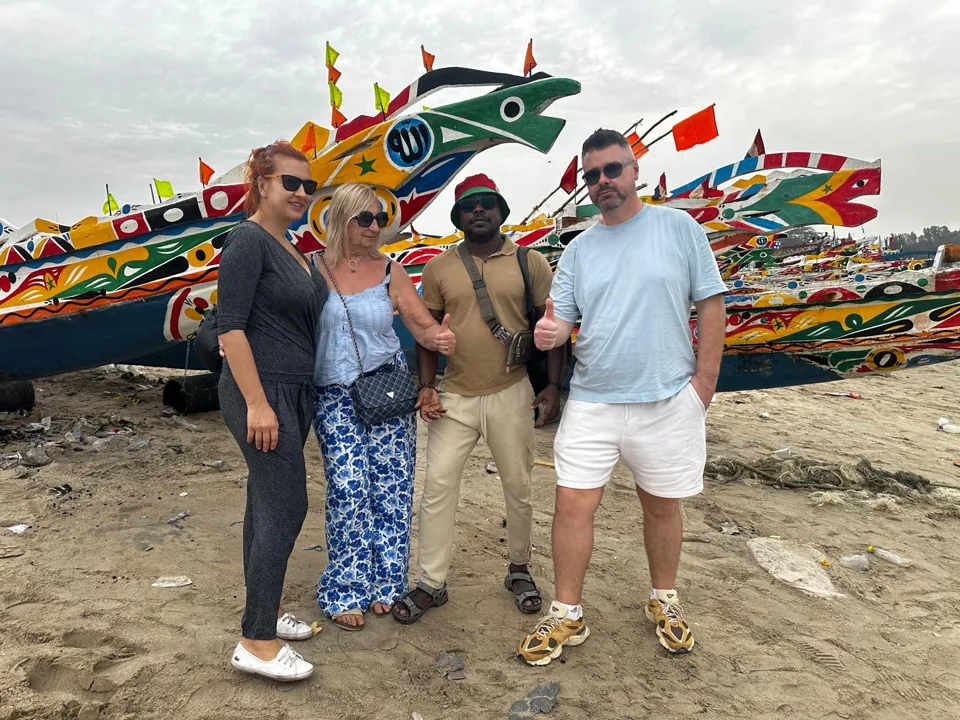
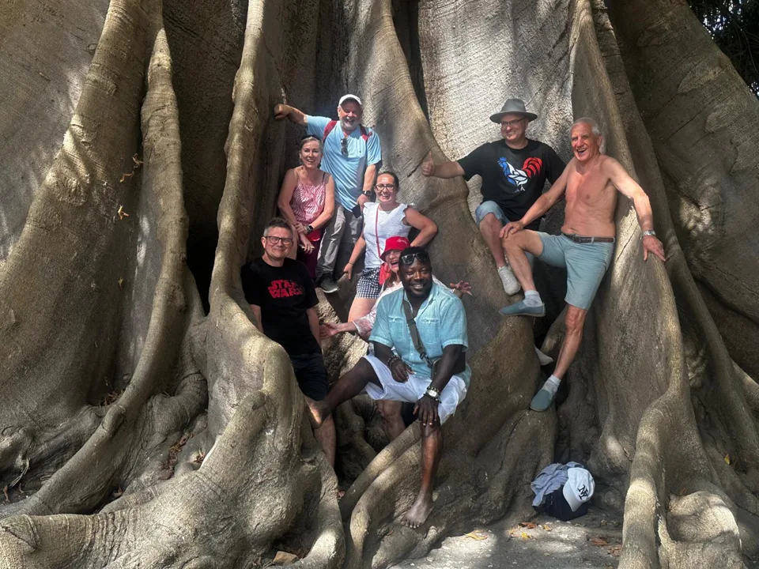
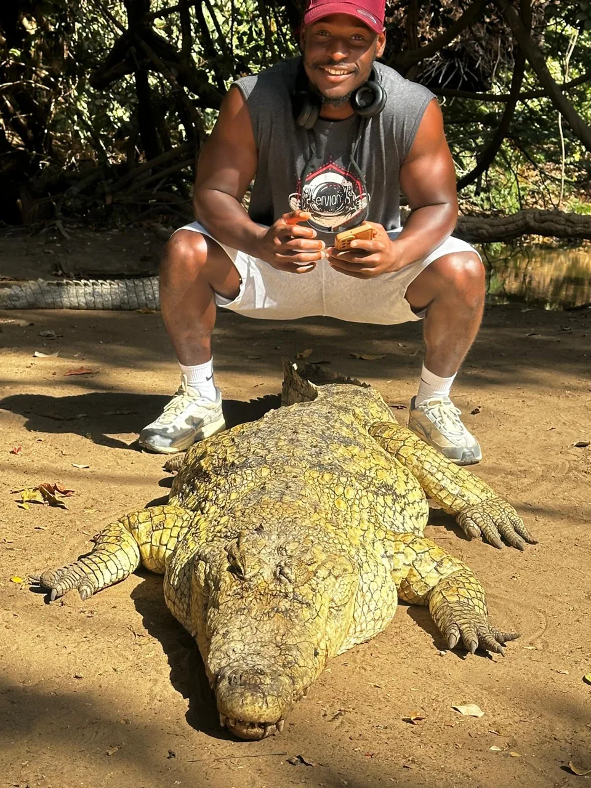

Hotel pickup and route briefing
Meet your guide at your hotel or agreed pickup point, then confirm the day style: culture, coast, shopping, photos, food or a soft mix of everything.
Pickup from the main coastal hotel areas.
Private day tour / from $85
A flexible first-day route for travelers who want local life, coastal scenery, short cultural stops and an easy introduction to The Gambia from their hotel area.
This tour is ideal for your first full day in The Gambia. Your guide shapes the route around your hotel location, time, energy and interests, so you can combine coastal views, local streets, markets, craft stops and everyday Gambian life.
It works well for couples, families and small groups who want a friendly private guide, simple logistics and enough flexibility to pause for photos, local food, shopping or a quieter beach moment.




The exact stops are confirmed before the tour and can be adjusted to your hotel area and interests.
Meet your guide at your hotel or agreed pickup point, then confirm the day style: culture, coast, shopping, photos, food or a soft mix of everything.
Pickup from the main coastal hotel areas.Move through the Kololi, Kotu, Senegambia or Banjul area with relaxed stops for scenery, everyday street life and local stories.
Good for a first orientation in The Gambia.Add a market walk, craft stop, village-style visit or cultural point depending on timing and your interests.
Flexible route, private pace.Finish with a beach, viewpoint, cafe, shopping or photo stop before returning to your hotel.
Optional food stop can be arranged.Final timing and pickup details are confirmed before you go.
Pickup and return from the main coastal hotel areas and nearby Banjul locations.
English-speaking guide as standard, with Polish-speaking guide available by request.
Stops can be shaped around markets, culture, photos, coast or local food.
Send your date and group size, and we reply from info@gambiantour.com.
We will reply from info@gambiantour.com with availability and the best pickup plan.